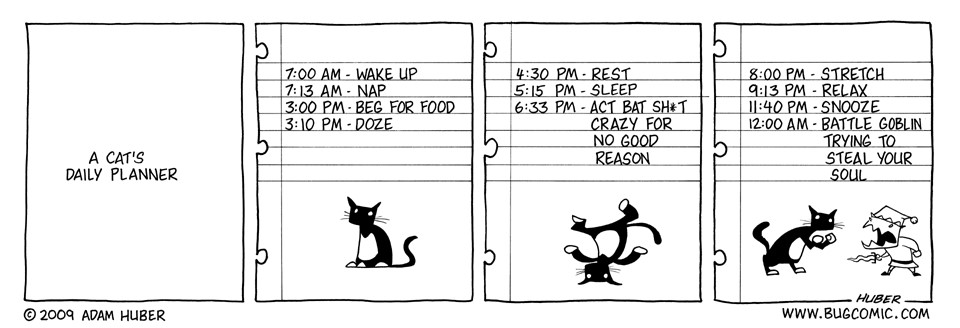

for loops#
In the previous section we introduced lists in Python, one form of a collection of values that can be represented by a single variable. In this lesson we will learn how to use loops. Loops allow parts of code to be repeated some number of times, such as iterating over all of the items in a Python list and performing a calculation using each item.
A (bad) example#
Let’s consider an example using the list below:
european_cities = ["Helsinki", "Paris", "Barcelona", "Uppsala"]
Suppose we want to print out the name of each city in our list. We could use the index value for each city and do the following:
european_cities[0]
european_cities[1]
european_cities[2]
european_cities[3]
But this is a bad idea. Why? Well there are two reasons.
First, it does not scale nicely for long lists and will take forever to type in.
Second, it won’t work if the length of the list has fewer than 4 cities (or more than 4 cities for that matter…).
Let’s see an example with an updated list.
european_cities = ["Riga", "Rome", "Athens"]
european_cities[0]
european_cities[1]
european_cities[2]
european_cities[3]
Here we get an IndexError because we have only 3 values in our list and tried to access 4 values based on what had worked for the first european_cities list.
Introducing the for loop#
In situations like those above, it is far more efficient to use a for loop. Let’s see an example.
european_cities = ["Amsterdam", "Brussels", "Lisbon", "Reykjavik"]
for city in european_cities:
print(city)
Not only is this shorter, but it is also more flexible.
Try printing out a different list of cities such as ['Detroit', 'Chicago', 'Denver', 'Boston', 'Portland', 'San Francisco', 'Houston', 'Orlando'].
Still works, right?
us_cities = [
"Detroit",
"Chicago",
"Denver",
"Boston",
"Portland",
"San Francisco",
"Houston",
"Orlando",
]
for city in us_cities:
print(city)
for loop format#
for loops in Python have the general form below.
for variable in collection:
do things with variable
Let’s break down the code above to see some essential aspect of for loops:
The
variablecan be any valid variable name you like.The statement of the
forloop must end with a:The code that should be executed as part of the loop must be indented beneath the
forstatement. The recommended indentation is 4 spaces.There is no additional special word needed to end the loop, you simply change the indentation back to normal.
In summary, for loops are useful to repeat some part of the code a finite number of times.
Your daily for loop#

Figure 2.3. A cat’s daily routine as an example loop. Original comic from https://www.bugmartini.com/comic/cats-eye/.
Like many other programming concepts, the idea of looping through actions is something that is already perhaps more familiar to you than you think. Consider your actions during a given weekday. Many people have certain routines they follow each weekday, such as waking up, taking a shower, eating breakfast, and brushing their teeth. In Python code, we might represent such actions as follows:
for day in my_week:
wake_up()
take_shower()
eat_breakfast()
brush_teeth()
...
Note that my_week would be a list of the days of the week, and the actions you take are represented as functions, such as wake_up().
Furthermore, by following this kind of list of repeating actions we’re able to start the day effectively even before the first cup of coffee :).
For loop variables#
Note that the variable used in a for loop is just a normal variable. This its value still exists after the loop has been run. Let’s loop over a list of weather conditions and print them to the screen.
weather_conditions = [
"rain",
"sleet",
"snow",
"freezing fog",
"sunny",
"cloudy",
"ice pellets",
]
for weather in weather_conditions:
print(weather)
What is its value of weather after the for loop has completed?
print(f"After the loop, weather is {weather}")
For loops using the range function#
A loop can be used to iterate over any list of values in Python. So far we have considered only iterating a list, but we could also write a loop that performs a calculation a specified number of times by using the range() function. Let’s consider an example where we use a for loop with value as the loop variable and range(5) as the collection. Let’s see what happens if we print value at each iteration.
for value in range(5):
print(value)
In this case, we use a special function called range() to give us a list of 5 numbers [0, 1, 2, 3, 4] and then we print a number in the list to the screen during each iteration.
When given an integer (whole number) as an argument, range() will produce a list of numbers with a length equal to the specified number.
The list starts at 0 and ends with number - 1.
You can learn a bit more about range by typing help(range).
In [1]: help(range)
Help on class range in module builtins:
class range(object)
| range(stop) -> range object
| range(start, stop[, step]) -> range object
|
| Return an object that produces a sequence of integers from start (inclusive)
| to stop (exclusive) by step. range(i, j) produces i, i+1, i+2, ..., j-1.
... (output truncated)
Question 2.7#
The program below will print numbers to the screen using the range() function.
for i in range(...):
print(i)
Using the documentation that is produced when you run help(range), what values would you replace the ... in the parentheses of the range() function with to have the following output printed to the screen? Try to first think about the function without running any code.
2
5
8
# You can use this cell to enter your solution.
# Solution
for i in range(2, 9, 3):
print(i)
Looping over lists using index values#
Since we already know how to find the length of a list using the len() function, we can now take advantage of this knowledge to make our for loops more flexible. Let’s start by doing something we have done earlier, printing out city names using a for loop. However, this time we will also use the range() function to print the cities.
african_cities = ["Dakar", "Addis Ababa", "Nairobi", "Cairo", "Rabat", "Kampala"]
for i in range(len(african_cities)):
print(f"{african_cities[i]} is at index {i} in the list.")
There are several important things to observe in this for loop:
You can see that because we are using the
range()function, the value assigned to the loop variableistarts with0and increases by1each time through the loop.In order to access individual cities in the
african_citieslist, we need to include the index value (e.g.,african_cities[i]). Here, the variableiwill be replaced by the current value assigned from therange()function.
The variable i is commonly used to denote the index variable in loops. Loops can sometimes occur with another loop (referred to as nested loops), in which case other index variables such as j or k are often used.
Why use index value to loop over a list?#
Good question. There are two common case where you might need to loop using index values:
If you want to update individual values in a list you’re likely going to need a loop that includes the index values. To update a list value, you need to refer to both the list and index, which means looping using the list values directly will not work. There are functions such as
enumerate()that can help, but their use can be somewhat confusing for new programmers.In cases where you have multiple lists that are related to one another, it can be handy to use a loop with the index values to be able to access corresponding locations in each list. For this, let’s consider an example with the two lists below.
cities = ["Helsinki", "Stockholm", "Oslo", "Reykjavik", "Copenhagen"]
countries = ["Finland", "Sweden", "Norway", "Iceland", "Denmark"]
As you can see we have 5 cities and 5 corresponding countries. Let’s print out each pair using a single for loop.
for i in range(len(cities)):
print(cities[i], "is the capital of", countries[i])
Cool. So as you can see, the index i is used in this case to access each item in the two lists of cities and countries and allow us to print out the city/country pairs. In the example above, we used the length of the list cities in the range() function. We could just as easily used the list countries to define the values of i since both lists are the same length.
Question 2.8#
What output would the following program produce? Try to first think about the loop without running any code.
odd_numbers = [1, 3, 5, 7, 9]
even_numbers = [10, 4, 6, 8, 2]
for i in range(len(odd_numbers)):
print(odd_numbers[i] + even_numbers[i])
# Use this cell to enter your solution.
# Solution
11
7
11
15
11